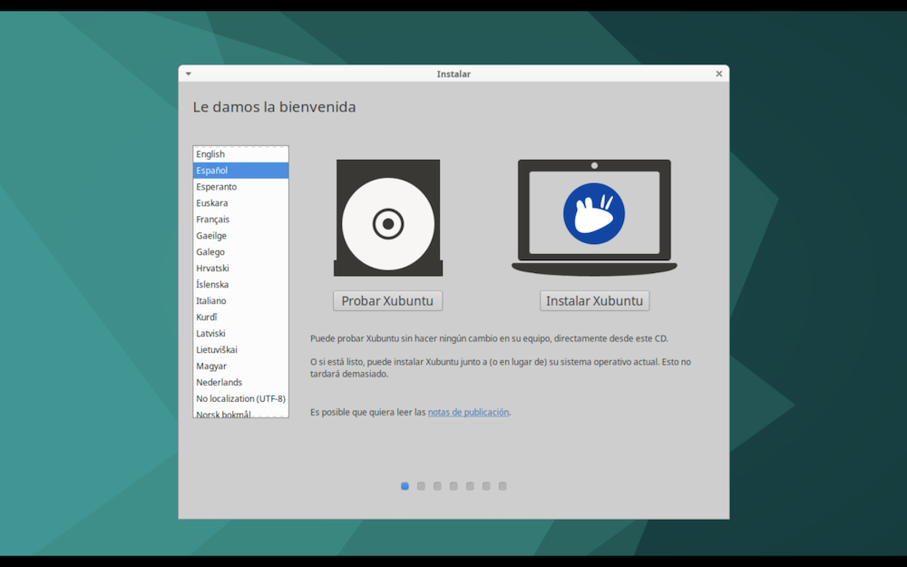

Instalar Linux¶
Una vez configurada la máquina virtual, vamos a instalar el sistema operativo en el disco duro virtual.
Instalación¶
Tras iniciar una sesión Live desde el DVD de instalación, como vimos en el capítulo anterior, seleccionamos el idioma y pulsamos sobre el botón Instalar XUbuntu:

Importante:
Antes de empezar el proceso, debemos asegurarnos de que tenemos el ordenador conectado a la red eléctrica y a Internet. Esto último es especialmente importante, porque permitirá detectar la conexión de red y configurarla automáticamente.
Seleccionamos la disposición del teclado:

El uso de cierto software está limitado a licencias de uso, y no se incluye en algunas distribuciones Linux, o bien es opcional. Marcamos la casilla Instalar programas de terceros.

A continuación decidimos que vamos a hacer con el disco duro. Como se trata de un disco virtual, marcamos la opción de borrar todo el disco. De todas formas está vacío…
Antes de borrar el disco virtual, se nos pide confirmación:
Establecer nuestro huso horario:
A continuación introducimos un nombre de usuario, equipo y contraseña. La opción Iniciar sesión automáticamente hace que no se nos pida la contraseña cada vez que encendemos la máquina virtual.
Comienza el proceso de copiado de contenidos del DVD al disco duro y su correspondiente configuración. Es un proceso totalmente automático que puede llevar bastante tiempo. Mientras tanto, se muestra información sobre XUbuntu. Algunos componentes se descargan de Internet durante el proceso:
Fin de la instalación. Pulsamos sobre el botón reiniciar ahora.

Se nos pide que retiremos el DVD para reiniciar. En la configuración de la máquina virtual cambiamos la unidad de arranque y establecemos que sea el disco duro.
Una vez hecho esto, volvemos a la máquina virtual y pulsamos Enter para continuar. La sesión Live finaliza y se reinicia la máquina, cargando esta vez el sistema operativo desde el disco duro virtual (tarda un poquito, paciencia). Finalmente se muestra el escritorio virtual en una ventana.
Por algún motivo, la versión que tengo de XUbuntu muestra un mensaje indicando que falta algo de instalar:
Pulsamos en el botón [Ejecutar esta acción]. Se nos pide la contraseña del usuario que hemos creado en la máquina virtual:

El menú de Xfce¶
El escritorio Xfce suele mostrar una barra de aplicaciones llamada Panel, que en algunas distribuciones aparece en el borde inferior de la pantalla. XUbuntu lo muestra en la parte superior, aunque podemos cambiarlo de sitio o crear nuevos paneles, como veremos más adelante.
En la esquina tenemos un icono con el logo de Xfce, una mascota llamada whisker:
Al pulsar en ese icono, se muestra el menú de aplicaciones:
El menú de aplicaciones nos da acceso a aquellas que tenemos instaladas, pero no todas están en algún apartado del menú. Tenemos dos posibles alternativas:
-
pulsar en la categoría Todas las aplicaciones, donde tenemos la lista completa
-
teclear el nombre de la aplicación (o algo que se le parezca) en la caja de búsquedas de la parte superior del menú. Se mostrará una lista filtrada de programas que se ajustan a lo tecleado.
Además de usar el ratón, el menú de aplicaciones también es accesible pulsando en la tecla [Super]. En teclados Windows es la que tiene el símbolo de Microsoft, y en teclados Mac, la tecla Cmd
Configuración de la máquina virtual¶
Desplegando el menú de aplicaciones, apartado Todas las aplicaciones, buscamos el programa Gestor de configuración, que muestra una ventana con todas las posibilidades:
Cada opción es un pequeño programa que también es accesible por separado pulsando en el menú de aplicaciones, apartado Configuración, que cuenta con entradas para cada función.
Actualizar software¶
Antes de hacer nada, el primer paso tras la instalación del sistema ha de ser actualizar el software instalado. Acudimos a configuración > actualización de software:
Se nos pedirá la contraseña de nuestro usuario virtual. Finalizado el proceso, seguramente habrá que reiniciar la máquina virtual.
Resolución¶
Si la resolución de pantalla de la máquina virtual no se ajusta automáticamente, podemos hacerlo manualmente en dos pasos:
-
en el menú de preferencias de VMWare, apartado Pantalla, seleccionar la opción ajustar máquina virtual a la pantalla. Con esto evitamos que VMWare intervenga para decidir la resolución del escritorio virtual. Hacerlo tanto para ventanas como para pantalla completa.
-
en la máquina virtual XUbuntu, entrar en Configuración > Pantalla y seleccionar la resolución deseada.
La minibarra¶
Cuando la máquina virtual ocupa toda la pantalla, dejaremos de ver el menú de VMware. Contamos con una funcionalidad alternativa muy interesante, la minibarra. Consiste en un pequeño gadget, que se muestra en uno de los bordes de la pantalla, y al pulsar sobre el mismo muestra un menú con opciones que habitualmente encontraremos en el menú de VMware o en su barra de herramientas.
Podemos hacer cosas tales como suspender/apagar la máquina virtual, entrar en la configuración, conectar o expulsar CDs, o simular combinaciones de teclas que son capturadas por el Host y necesitamos pulsar en la máquina Guest.
En la siguiente imagen vemos la minibarra en el borde superior del escritorio (al que le hemos cambiado la imagen de fondo, veremos más adelante como se hace):
Para activar la minibarra, pulsar en el menú de VMware, opción Vista > Minibarra de pantalla completa.
Podemos configurar la minibarra para que se muestre solo cuando acercamos el ratón, o para ubicarla en cualquiera de los cuatro bordes de la pantalla.